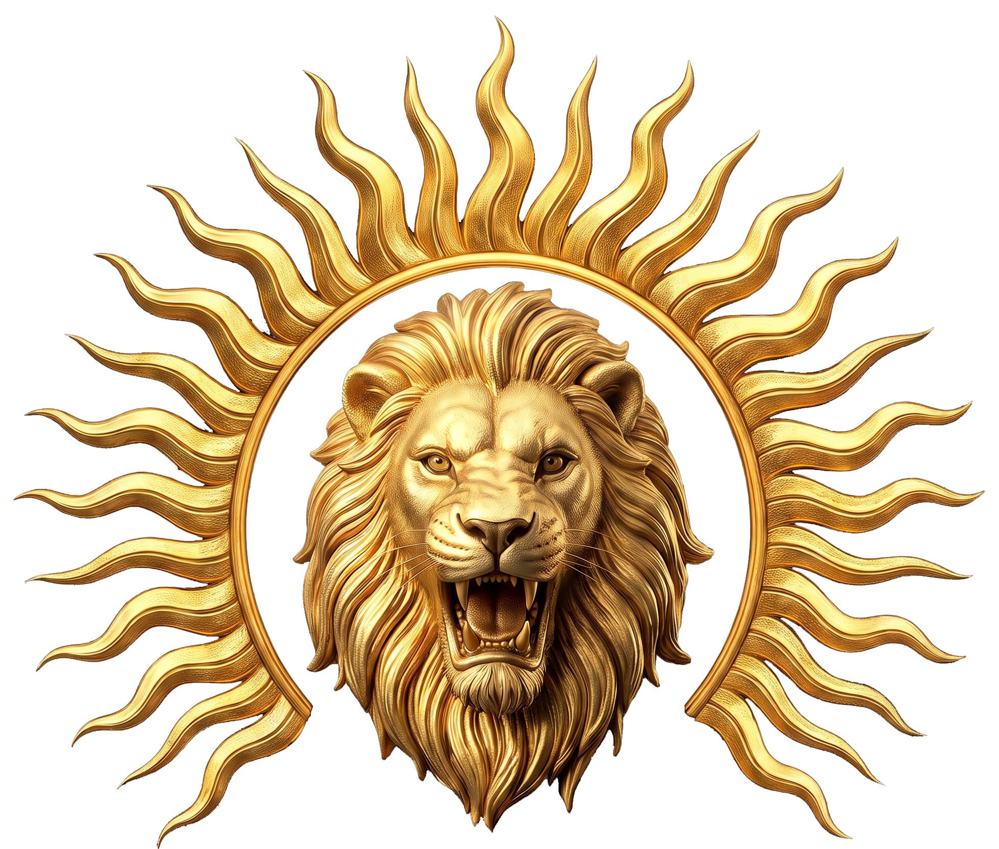
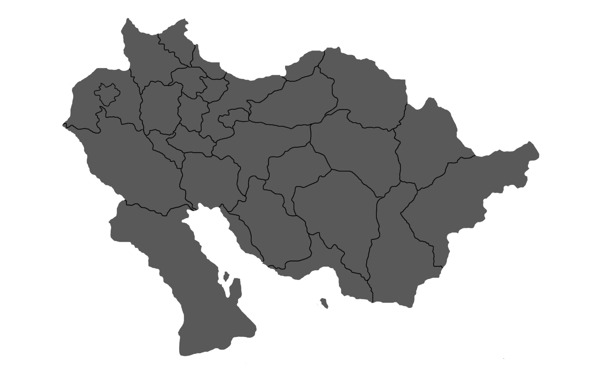

Главная
Активность
Анкеты
Правила
Банк
Репутация
Устройство Персии
Армия
Карта
Звездный гид
Летопись
Особенности останов
Али-капу
Исфахан
Накш-э Джахан
Калькулятор пути
Регионы:
Все
Север
Запад
Центр
Восток
Юг
Аравия
Водоемы
Племя:
Все племена (и регионы)
▼
Все племена (и регионы)
Сефеви
Устаджлы
Шамлу
Афшар
Румлу
Баят
Каджар
Карадаглы
Асирлу
Бахтиар
Туркоман
Бахарлу
Караманлу
Текели
Хотак
Ресурс:
Все ресурсы
▼

Мазендеранское море
Персидский залив
Аравийское море
Ормузский пролив
Ардебиль
Азербайджан
Зенджан
Казвин
Гилян
Мазендеран
Голестан
Курдистан
Битлис
Керманшах
Хамадан
Илам
Лурестан
Багдад
Хузестан
Кум
Семнан
Исфахан
Йезд
Фарс
Бушир
Керман
Хормозган
Северный Хорасан
Южный Хорасан
Систан и Белуджистан
Герат
Кандагар
Эль-Хаса
Хаиль
Неджд
Йемен
Дильмун
Дамман
Катар
Эль-Катиф
Эль-Кобара
×
Регион
Племя
Описание